Практичні курси · журнал «ДентАрт» 2016 №2
Екстремальні реставрації: штифтувати, не штифтувати. Частина 2
EXTREME RESTORATIONS WITH A POST OR WITHOUT POST PART 2
У другій частині статті ми розглянемо можливості відновлення безштифтовими техніками, коли установка штифтів не тільки протипоказана, але й не має сенсу. Буде продемонстровано клінічні приклади безштифтового відновлення простими композитними вкладками і композитними вкладками, посиленими фабрично просякнутим скловолокном, у прямій техніці реставрації в концепції біоміметичного відновлення.
Відновлення девітальних сильно зруйнованих, з втратою опорних структур, зубів — одна з найбільших проблем для клініциста. 15-20 років тому відновлення ендодонтично лікованого зуба автоматично мало на увазі виготовлення металевої вкладки і коронки. Стоматологи приносили в жертву величезні обсяги кореневого і коронкового дентину, що збільшувало ризик таких непоправних ускладнень, як розкол, переломи, перфорація кореня і т.д. Причому при використанні жорстких нееластичних матеріалів (титан, оксид цирконію, різні сплави металів) фрактури завжди мають тяжчий перебіг, тобто лінія перелому в таких клінічних ситуаціях буде нижче рівня альвеолярної кістки.
За даними, що їх навів у низці статей Паскаль Маньє, застосування жорстких штифтових або заблокованих конструкцій при відновленні бічних зубів абсолютно не рекомендовано, особливо якщо планується подальше відновлення коронкової частини зуба еластичними (з композиту, польовошпатної кераміки чи прес-кераміки) прямими або непрямими конструкціями [1].
У першій частині статті ми докладно розглянули один з варіантів альтернативного відновлення сильно зруйнованого зуба, визначили показання до застосування скловолоконних штифтів. Нагадаємо, що відновлення на скловолоконних штифтах будуть максимально успішними в клінічних ситуаціях, коли штифт матиме максимальну конгруентність зі стінками кореня. Інакше обсяг фіксуючого цементу навколо стандартного штифта буде вимушено збільшуватися. Напруга, яку відчувають тканини зуба внаслідок постійних вертикальних і трансверзальних, циклічних навантажень, накопичується саме в зоні ненаповненості, якою і є цемент подвійного затвердіння. Поява і розвиток тріщин у зубах — це динамічний процес, поширення тріщини завжди йтиме шляхом найменшого опору, тобто по межі фіксуючого цементу.
Цей феномен добре ілюструє дослідження, виконане і описане Selim Erkut і співавт. [8], в якому робилася оцінка мікропідтікань у кореневих каналах, відновлених вкладками, армованими кількома різними типами скловолокна Light Post, Glassix, Ribbond, StickTech Post, зафіксованими на ненаповнений цемент подвійного затвердіння (фото 1). Серед протестованих зразків індивідуальні вкладки з волокна Ribbond показали найменше розтріскування стінок каналу — через зниження обсягу фіксуючого матеріалу і як наслідок — зменшення полімеризаційного стресу [2, 3].
| Скловолоконний штифт на цемент подвійного затвердіння | Кварцевий штифт на цемент подвійного затвердіння | Індивідуальна скловолоконна вкладка Ribbond на наповнений композит | |
|---|---|---|---|
| апікальний зріз | 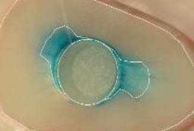 | 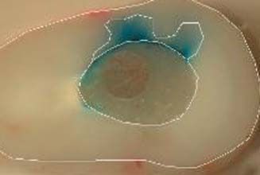 | 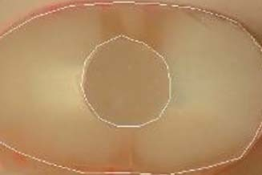 |
| серединний зріз | 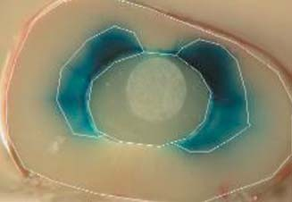 | 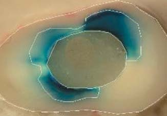 | 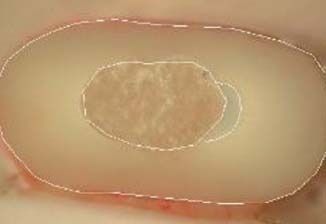 |
| коронарний зріз | 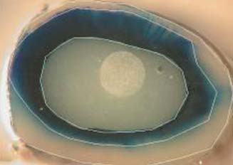 | 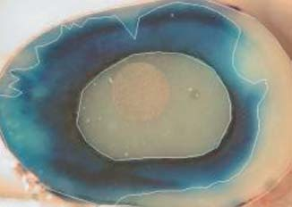 | 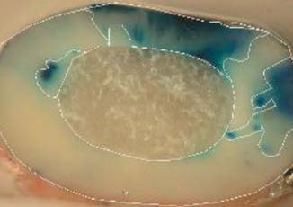 |
Якщо проаналізувати особливість будови коренів різних зубів, стає очевидно, що не так часто можна створити правильний перетин доступу під штифт без критичної втрати кореневого дентину, що також кардинально позначиться на виживанні конструкції відновленого девітального зуба. У таких ситуаціях можна використовувати індивідуальні композитні або індивідуальні скловолоконні вкладки [2].
Перші альтернативні класичним догмам стоматології конструкції, а саме прямі композитні вкладки, запропонував Сергій Радлінський. Такі вкладки, виконані з еластичного мікрогібридного композиту (модуль пружності близько 16 ГПа), зміцнюють стінки кореня завдяки адгезивному зв'язку між елементами конструкції, знижують розклинювальний ефект на решту тонких стінок кореня, дозволяють в одне відвідування виконати довготривалу реставрацію з міцнішого нанокомпозиту, що має оптичні властивості, максимально наближені до оптичних властивостей емалі [4]. Власне, виконання таких композитних вкладок можливе завдяки надійному адгезивному зв'язку з дентином, що долає критичні 17-20 МПа на розрив. Сучасні дентинні адгезиви тотального або селективного протравлювання дають можливість склеювання близько 35 МПа з дентином і 45 МПа з емаллю. Причому чим складніша конфігурація порожнини після ендодонтичного лікування, тим кращу адгезію до тканин ми можемо отримати.
Однак використання таких композитних вкладок було пов'язане з ризиком виникнення ускладнень внаслідок високої усадки і значного полімеризаційного стресу. Полімеризаційна усадка і стрес залежать від кількості поверхонь, що склеюються. Чим більша площа склеєних поверхонь всередині порожнини, тим більший рівень полімеризаційного стресу буде відчувати композит і тим вищий ризик можливого відриву композиту від стінок кореня або крайового підтікання. Техніка пошарового внесення композиту певною мірою знижує полімеризаційний стрес.
Однак шість років тому компанія Dentsply випустила на ринок текучий матеріал низької в'язкості, що містить запатентований мономер, який забезпечує низький рівень полімеризаційного стресу (фото 2). Показник полімеризаційного стресу матеріалу SDR приблизно на 60% нижчий, ніж у більшості композитів. Використання матеріалу в щоденній практиці дає стоматологові свободу — він сумісний з усіма адгезивами і композитами на метакрилатній основі, має достатню механічну міцність для відновлення бічних зубів, може бути ефективно використаний у глибоких порожнинах з високим С-фактором при постендодонтичному відновленні [5]. Нижче подано клінічний приклад компромісного відновлення сильно зруйнованого моляра в довготерміновому періоді спостереження.
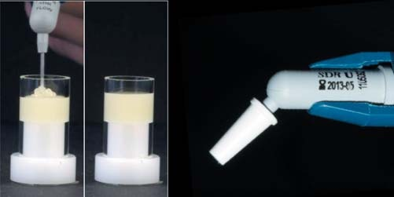
Фото 2. Текучий композит SDR зі зниженим полімеризаційним стресом.
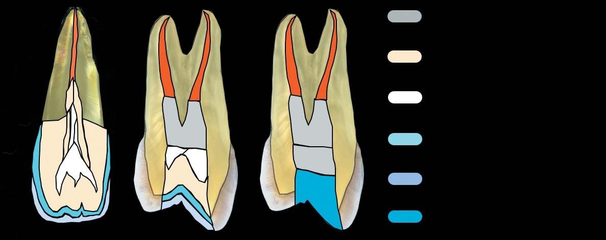
Мал. 1. Композитна вкладка в передніх зубах (а) або в бічних зубах естетично значущої зони (б) вимагає суворого дотримання опаковості натуральних тканин зуба, а значить чотиришарової біоміметичної техніки відновлення. У ситуаціях, коли бічні зуби не видно при усмішці і розмові (в), допускається спрощений двошаровий підхід, коли порожнину зуба закривають матеріалом зі зниженим полімеризаційним стресом, наприклад SDR, а дентинні та емалеві шари — матеріалом середньої прозорості, наприклад CeramX one Universal.
Клінічний приклад 1. Етапи прямої реставрації на композитній вкладці з SDR
Пацієнт М., 21 рік, звернувся у зв'язку із застряванням їжі поруч з відновленим зубом на нижній щелепі праворуч. Передортопедичне відновлення композитом зуба 46, зі слів пацієнта, було виконано близько місяця тому, планувалося виготовлення металокерамічної одиночної коронки. Зуб первинно ендодонтично пролікований, коли пацієнтові було близько 12 років. Лікар, який готував зуб під ортопедичну конструкцію, кореневі канали повторно не переліковував, хоча і був зафіксований анкерний штифт.
Пацієнтові спочатку було запропоновано видалення цього скомпрометованого зуба з подальшою імплантацією, оскільки будь-яке рішення про його відновлення можна вважати компромісним. Однак його бажання спробувати зберегти зуб і наші давні спостереження за такими компромісними реставраціями дозволили нам виконати спірну з точки зору консервативного стоматологічного підходу конструкцію.
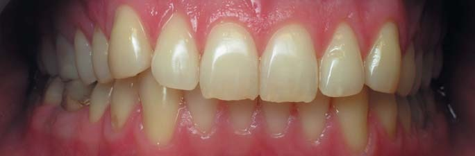
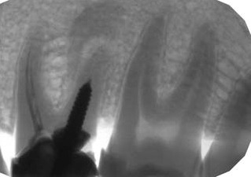
Після рентгенографії у нас виникли сумніви з приводу правильності тактики лікування, обраної його лікуючим лікарем. Відсутність ферула, руйнування нижче рівня ясен, можливість розколу кореня через неправильну фіксацію жорсткого штифта, незадовільне ендодонтичне лікування кореневих каналів — усі ці фактори вкрай негативно позначаються на довговічності реставрації.
Після видалення неспроможної пломби проведено видалення розм'якшеного дентину, що утворився через тривалий період негерметичності системи кореневих каналів і власне конструкції на штифті. Найбільш непрогнозованим етапом був етап видалення анкерного штифта, оскільки в будь-який момент маніпуляції могли закінчитися видаленням зуба. Штифт ослаблений у найбільш напруженій устьовій зоні тонким бором Трансметал, і після озвучення на середніх потужностях ультразвукового п'єзоелектричного апарата Satelec насадками Start-X/Dentsply Maillefer витягнутий з каналу розкручуючими рухами проти годинникової стрілки.
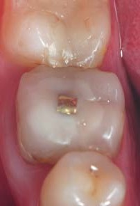
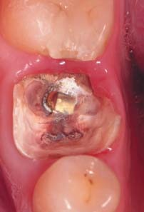
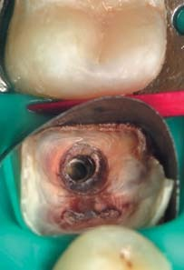
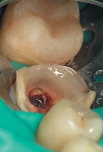
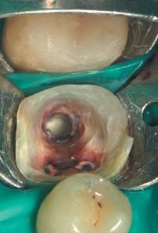
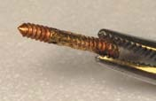
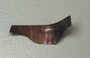
Головна умова передендодонтичного відновлення — обов'язкова ізоляція робочого поля рабердамом. Кламер не може бути встановлений, доки не буде відновлено циркулярний периметр дентину. Глибоке руйнування під ясна вимагає дуже акуратного і точного підходу. За допомогою вирізаної жорсткої латунної матриці і гладилки можна ізолювати перехід на корінь, як при класичній побудові контакту.
Зверніть увагу, що потрібно під ізоляцією матрицею додатково очистити поверхню дентину в зоні переходу за допомогою ультразвуку. На фото відсутній важливий елемент — широка гладилка, яка утримуватиме матрицю по периметру (іноді потрібні дві гладилки і допомога асистента) для запобігання будь-яким підтіканням та забрудненню поверхні, до якої необхідно приклеїтися. Протравлювання та адгезивна підготовка стику провадяться за стандартним протоколом, як і при класичній побудові контакту. В зоні прилягання матриці вноситься текучий композит, виконуючи роль своєрідного силера, виплеск якого при необхідності можна легко заполірувати штрипсами різної зернистості, згладивши перехід на шийку зуба. Передендодонтичне відновлення периметру виконано мікрогібридним композитом Spectrum TPH, Dentsply, відтінку А3,5О, який має оптимальну вклеюваність до поверхні, легко притирається і є оптимальним матеріалом для імітації дентину.
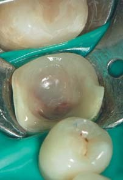
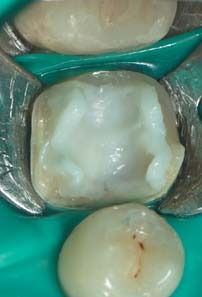
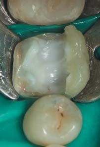
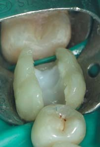
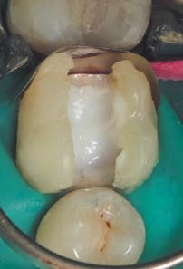
Після переліковування системи кореневих каналів, їх обтурації системою Термафіл доступ під штифт звільнено за допомогою бору Post Space/Dentsply. Для перестраховування в зоні, де у нас були побоювання щодо ймовірного розтріскування кореневого дентину, накладено прокладку з ProRoot MTA. Цей етап є спірним, однак критично не вплинув на збереження реставрації.
Після очищення поверхні дентину від силера проведені протравлювання і адгезивна підготовка вже всієї площі тканин зуба. Увесь доступ під анкерний штифт і піднутрення порожнини були заповнені SDR, матеріалом зі збалансованим полімеризаційним стресом, в обсязі 4-6 мм, який завдяки своїм можливостям самовирівнювання і високої плинності чудово підходить у цій ситуації, оскільки пакування більш наповненого композиту вимагало б від нас певних зусиль.
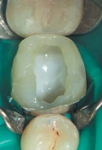
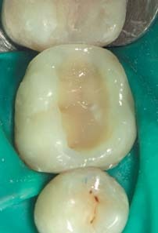
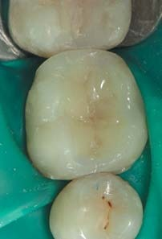
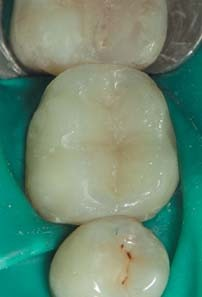
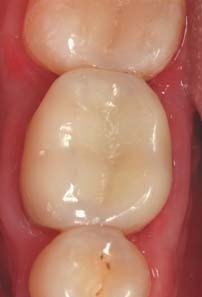
Відновлення виконувалося за стандартним протоколом, класичними відтінками матеріалів, що імітують природні тканини зуба. Моделювання можна розпочати з постановки конусів з імітатора парапульпарного дентину, верхівки яких повинні відповідати проекції найвищої точки горбика. Це поліпшує орієнтування, дозволяє точніше змоделювати оклюзійний обсяг, правильний нахил стінок через осьове положення зуба. Парапульпарний дентин імітувався білим опаковим відтінком WO матеріалу Esthet X/Dentsply, плащовий дентин — відтінком А3,5О мікрогібридного матеріалу Spectrum TPH, Dentsply, основна і поверхнева емаль — відтінками B2, YE матеріалу Esthet X/Dentsply.
Довільний дефект після побудови спочатку оральної, потім вестибулярної стінок переводиться в дефект МОД, і після почергового відновлення контактних поверхонь за допомогою системи Palodent закриття оклюзійного дефекту не викликає складнощів. Обов'язковий етап — це шліфування контактних поверхонь і переходу на корінь металевими і лавсановими штрипсами різної зернистості з обов'язковим рентгенологічним контролем переходу на корінь. Орієнтиром при побудові реставрації служать зуби, що стоять поруч, розташування їх горбиків і центральних фісур, екватора. При точному прогнозі анатомії потрібна мінімальна фінішна обробка по прикусу борами жовтого маркування (зернистість 30 мк). Після фінішної полімеризації — завершальні етапи шліфування формами Enhance і полірування пастами Prisma Gloss/Dentsply.
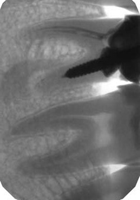
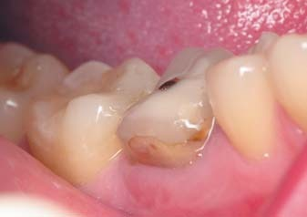
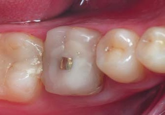
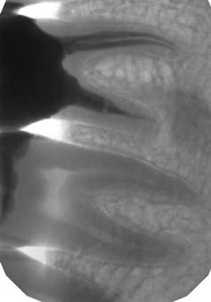
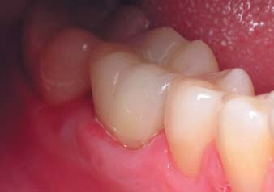
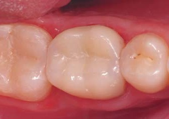
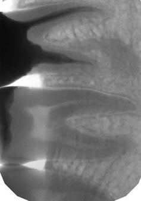
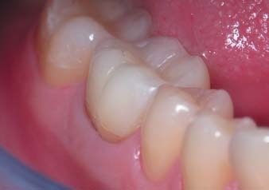
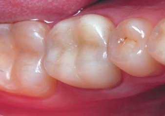
Незважаючи на те, що ми були готові до можливих відколів і поломок такого складного відновлення, динамічне спостереження протягом 5 років продемонструвало чудову клінічну ефективність. Проблем і ускладнень у зоні глибокого дистального руйнування з боку пародонту не помічено, також на прицільних рентгенограмах спостерігається поліпшення періапікальної картини. Проте можна відзначити певне «старіння» адгезивного склеювання в зоні стику реставраційної основи і реставрації, але цей дефект можна усунути без повної заміни реставрації. Ступінь стирання композиту відповідає ступеню стирання емалі, тому такі відновлення з огляду на довгострокове функціонування завжди кращі, ніж виготовлення жорсткої каркасної коронки, а еластичність конструкції поліпшує прогноз таких відновлень. Ми не виключаємо виникнення ускладнень протягом більш тривалого періоду, проте можливість відстрочити імплантацію вже говорить про певний успіх відновлення.
Композитна вкладка, армована скловолокном
Нам хотілося б запропонувати модифікацію такої композитної вкладки. На даний момент завдяки своїм унікальним можливостям просочені фабричним способом скловолокна, такі як доступні на нашому ринку Dentapreg/ADM, EverStik/GC, набувають усе більшої популярності [4]. Також автори, як Девід Рудо, Іво Крейчі, Саймон Деліпері, стверджують, що волокна дозволяють армувати сильно зруйновані зуби в ситуаціях, коли площа склеювання викликає сумніви (сильно зруйновані премоляри і передні зуби), зуби зазнають підвищеного навантаження через незбалансовану або неповноцінну оклюзію, а також коли товщина дентину або відсутність обсягу тканин вимагає посилення дна і/або стінок зуба [2, 9, 12]. Таке скловолокно, укладене нижче рівня ясен в товщі композитної вкладки, не лише поліпшує ретенцію в корені, а й за рахунок високої міцності на розрив (1200-1300 МПа) відіграє роль контрфорса в конструкції і запобігає поширенню тріщини як у тканинах зуба, так і в композиті (рис. 2). Волокно може легко адаптуватися до контуру заданого доступу в кореневому каналі [6, 8, 10]. Також з волокна можна сформувати індивідуальну скловолоконну вкладку, яка має високі характеристики, високу еластичність, яка може бути зафіксована в подвійній техніці затвердіння (клінічні приклади 2, 3).
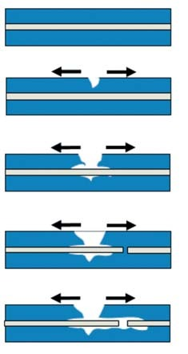
Рис. 1. Схематичне зображення запобігання розтріскуванню композиту навколо скловолокна, надав Девід Рудо.
Додаткове вкладання скловолокна в конструкцію вкладки збільшує її стійкість до деформацій, причому сама наявність волокна не захищає композит від розтріскування при перенавантаженні, але запобігає поширенню тріщини за рахунок поглинання напруги (рис. 1) [11,12]. Пропонуємо вашій увазі клінічний приклад відновлення сильно зруйнованого премоляра на композитній вкладці, армованій скловолокном Dentapreg/ADM, у тривалому періоді спостереження. Усі етапи цього відновлення виконані понад 5 років тому за класичним протоколом.
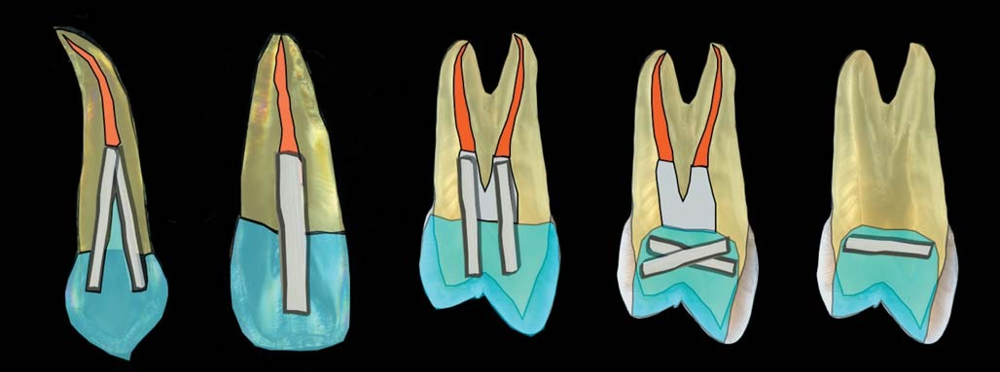
Рис. 2. Варіанти армування композитної конструкції скловолокном: ретенція в корені, розсіювання навантаження, армування тонких стінок, поглинання напруги, запобігання розтріскуванню.
Клінічний приклад 2. Відновлення композитною вкладкою, армованою скловолокном
Початкова клінічна ситуація. Зуб 25 раніше був відновлений металевою вкладкою і штампованою коронкою з пластмасовим облицюванням з вестибулярного боку. У зв'язку з періапікальними змінами потрібно провести ендодонтичне переліковування кореневого каналу.
Після зняття коронки виявилося, що вкладка була розцементована, що дозволило легко вийняти її з кореневого каналу, і нам навіть не знадобилося ультразвукове озвучування, що говорить про давню розгерметизацію конструкції. Після механічної обробки кореневого каналу системою ProTaper і медикаментозної обробки канал був обтурований системою Thermafil із силером АН+. Після очищення стінок доступу під вкладку він був виміряний для виготовлення заготовок потрібної довжини скловолокна.
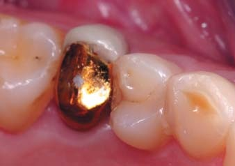
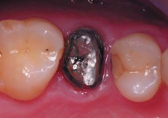
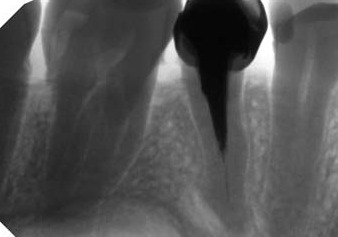
Нашою метою було підсилити стінки і композит у пришийковій зоні, отримати додаткову ретенцію в кореневому каналі, тому скловолокно Dentapreg/ADM вводилося досить глибоко (приблизно на 1/3 кореневого каналу), нижче рівня альвеолярної кістки. Заготовки зі штрипси допомагають дозувати необхідні відрізки скловолокна. Після протравлювання 36% ортофосфорною кислотою, адгезивної підготовки Prime & Bond NT, Densply, вестибулярна поверхня кореневого каналу проклеєна мікрогібридним композитом Spectrum TPH, який чудово вклеюється, має характеристики еластичності і міцності, подібні до дентину. На цю незаполімеризовану порцію композиту адаптується скловолоконна заготовка, і тільки після цього виконується полімеризація протягом 20 сек. За таким самим принципом робиться армування піднебінної поверхні доступу під вкладку. Такий підхід дозволяє знизити полімеризаційний стрес і максимально прополімеризувати кожну порцію.
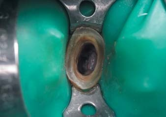
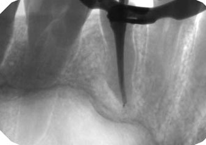
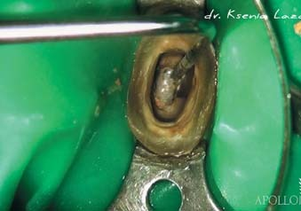
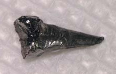
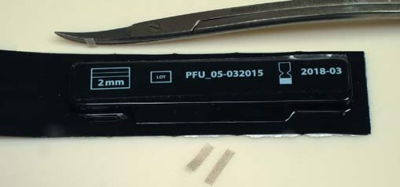
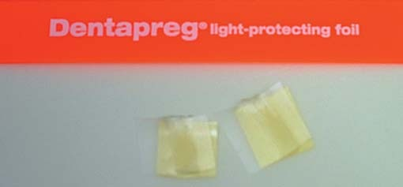
На заготовках у стандартній біоміметичній техніці пошарово відновлюється вестибулярна, потім піднебінна стінки. Орієнтиром служать зуби, котрі стоять поруч, що дозволяє дуже точно «потрапити» в топографію і полегшить фінішну обробку реставрації.
Таким чином, довільний дефект був переведений у медіально-дистально-оклюзійний, а після побудови проксимальних поверхонь за допомогою системи Palodent, Dentsply, нам дуже легко виконати закриття оклюзійного дефекту, глибокі поднутрення можна заповнити матеріалом SDR, Dentsply, для зниження полімеризаційної напруги і запобігання пороутворенню. Парапульпарний дентин імітувався відтінком WO матеріалу Esthet X HD/Dentsply, плащовий дентин — відтінком А 3,5О матеріалу Spectrum TPH/Dentsply, основна і поверхнева емаль — відтінками В2, YE матеріалу Esthet X HD/Dentsply. Шліфування та полірування реставрації виконане формами і пастами Enhance Composite Finishing & Polishing System/Dentsply.
Після моделювання і перевірки оклюзійних контактів; виконаний етап завершального полірування пастами Prisma Gloss Regular з частинками оксиду алюмінію 1 мкм і Prisma Gloss Extrafine із наддрібним розміром частинок оксиду алюмінію 0,3 мкм/Dentsply. Через 5 років після відновлення рентгенологічний контроль демонструє...
Відновлення індивідуальною скловолоконною вкладкою
Також зі скловолокна можна сформувати скловолоконну вкладку безпосередньо в кореневому каналі складного перетину або високої конусності, яка може бути зафіксована в техніці фіксації стандартного скловолоконного штифтування на цемент подвійного затвердіння, як показано на наступних серіях фотографій. Вкладки моделюються з преімпрегнованого скловолокна в очищеному кореневому каналі, передполімеризуються протягом 5-10 сек до затвердіння коронарної частини, після чого вкладка евакуюється з кореневого каналу, дополімеризовується протягом 20 сек, припасовується в кореневому каналі і після адгезивної підготовки (див. частину 1) фіксується на композит подвійного затвердіння або текучий композит зі збалансованим полімеризаційним стресом — SDR. Причому подальше відновлення може бути виконано як у прямій, так і в непрямій техніці, наприклад коронками з прес-кераміки або польовошпатної кераміки.
Клінічний приклад 3. Відновлення зуба 13 на корені
Висновок
З розвитком адгезивних технологій для відновлення сильно зруйнованих зубів доступний широкий спектр композитних куксових вкладок. Тривалі клінічні спостереження за такими відновленнями переконують у тому, що вони є чудовою альтернативою в ситуації одиночних відновлень зубів, де неможливе використання стандартних штифтів. Такі відновлення мають достатню міцність, щоб витримувати циклічні вертикальні і горизонтальні оклюзійні навантаження.
При великому обсязі тканин, доступних для адгезивного склеювання, можна обійтися без армування тканин скловолокном і виконувати композитну вкладку з матеріалу зі зниженим полімеризаційним стресом, наприклад SDR. Однак при відновленні сильно зруйнованих, структурно скомпрометованих зубів, при необхідності підсилювати стінки або дно порожнини, отримати додаткову ретенцію в корені ми рекомендуємо використовувати преімпрегноване скловолокно як у прямій, так і в напівпрямій техніці.
Література
- P Magne, J Goldberg, D Edelhoff, JF Guth. Composite Resin Core Buildups With and Without Post for the Restoration of Endodontically Treated Molars Without Ferrule // Nov 2015 · Operative Dentistry.
- Didier Dietschi, Olivier Duc, Ivo Krejci, Avishai Sadan. Biomechanical considerations for the restoration of endodontically treated teeth: A systematic review of the literature — Part 1. Composition and micro- and macrostructure alterations // Quintessence International. — 2007. — 9: 735-743.
- S Erkut, K Gulsahi, P Imirzahoglu, A Caglar, VM Karbhari, I Ozmen. Microleakge in Overflared Root Canals Restored with Different Fiber Reinforced Dowels // Operative Dentistry. — 2008. — 33-1: 92-101.
- Радлинский С.В. Биомеханика зубов и реставраций // ДентАрт. — 2006. — N2. — С.42-48.
- SDR Scientific Compendium // Dentsply de.
- Пономаренко О. В. Стекловолоконное армирование реставраций // ДентАрт. — 2015. — N3. — С.21-29.
- Christine M. Sedgley, Harold H. Messer. Are endodontically treated teeth more brittle? // Journal of Endodontics 7. — 1992. — P. 332-335.
- Erkut S, Eminkahyagil N, Imirzalioglu P & Tunga U. A technique for restoring an overflared root canal in an anterior tooth // Journal of Prosthetic Dentistry — 2004. — 92(6) 581-583.
- Jasmina Bijelic, Sufyan Garoushi, Pekka K Vallittu, Lippo V.J Lassila. Fracture Load of Tooth Restored with Fiber Post and Experimental Short Fiber Composite // Open Dent J. — 2011. — 5: 58-65.
- Рокка Дж. Т. Стекловолоконное армирование реставраций после эндодонтического лечения / Дж. Т. Рокка, Н. Ризкалла, И. Крейчи // ДентАрт: Журнал о науке и искусстве в стоматологии. — 2013. — № 3. — С. 34-40.
- Rudo DN, Karbhari VM: Physical behaviors of fiber reinforcement as applied to tooth stabilization // Dent Clin North Am 7-35, 1999.
- Kau K, Rudo DN: A technique for fabricating a reinforced composite splint // Trends Tech Contemp Dent Lab 9(9) 31-33, 1992.